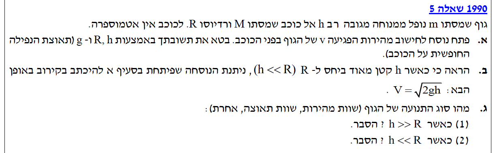
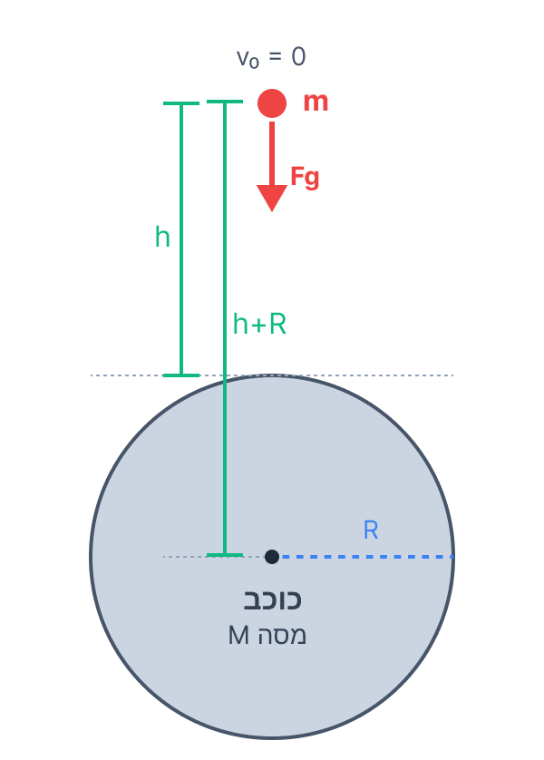

פתרון צעד-אחר-צעד בנושא כבידה ואנרגיה, כולל ניתוח כוחות.
תלמידים יקרים, לפנינו שאלה קלאסית בנושא כבידה ואנרגיה. ננתח את תנועתו של גוף הנופל ממנוחה אל עבר כוכב, ללא השפעת אטמוספרה (אין כוחות חיכוך).
נשתמש בחוקי ניוטון ובשימור אנרגיה כדי לפתור את הסעיפים השונים. בואו ניגש לעבודה!

לפתח נוסחה לחישוב מהירות הפגיעה \( v \) של הגוף בפני הכוכב, המובעת אך ורק באמצעות הפרמטרים \( R \), \( h \), ו- \( g \).

התאוצה \( g \) מוגדרת כתאוצת הנפילה החופשית על פני הכוכב. על פני הכוכב, המרחק ממרכזו הוא בדיוק \( R \). נרשום את חוקי ניוטון עבור גוף על פני הכוכב, נצמצם במסה ונבטא את הקשר:
מכיוון שלא פועלים כוחות לא משמרים שעושים עבודה, האנרגיה נשמרת. נשווה את האנרגיה המכנית במצב ההתחלתי (בגובה \( h \) מעל הקרקע, \( v_0 = 0 \), מרחק מהמרכז \( R+h \)) לאנרגיה במצב הסופי (רגע הפגיעה בקרקע, מהירות \( v \), מרחק מהמרכז \( R \)).
נעביר אגפים ונחלק במסה \( m \) (שכן היא מופיעה בכל האיברים ואינה אפס):
נוציא גורם משותף \( GM \) משני האיברים באגף ימין:
כעת, נעשה מכנה משותף בתוך הסוגריים. המכנה המשותף הוא \( R(R+h) \):
נאחד את השברים ונחסר את המונים (\( R + h - R = h \)):
כעת, נציב את הקשר שמצאנו בחלק 1 (\( GM = gR^2 \)) אל תוך המשוואה:
נצמצם ברדיוס \( R \) אחד במונה ובמכנה, ונכפול פי 2, ולבסוף נוציא שורש:
הגובה \( h \) קטן מאוד ביחס לרדיוס הכוכב \( R \). באופן מתמטי: \( h \ll R \).
להראות שתחת התנאי הזה, הנוסחה שפיתחנו בסעיף א' מתכנסת לנוסחה המוכרת מהקינמטיקה: \( V = \sqrt{2gh} \).
הזנחה (קירוב מתמטי): הדרך המדויקת להתייחס לקירוב \( h \ll R \) היא לחלק את אי השוויון ב-\( R \), ולקבל \( \frac{h}{R} \ll 1 \). המשמעות היא שהיחס \( \frac{h}{R} \) שואף לאפס וניתן להזניח אותו כאשר הוא מחובר או מחוסר מ-1 (כלומר \( 1 + \frac{h}{R} \approx 1 \)).
ניקח את הביטוי שקיבלנו בסעיף א':
כדי להשתמש בקירוב בצורה אלגברית מדויקת, נוציא גורם משותף \( R \) מהמכנה:
מכיוון שנתון \( h \ll R \), הביטוי \( \frac{h}{R} \) שואף לאפס בקירוב (\( \frac{h}{R} \approx 0 \)). נציב זאת במכנה ונקבל:
הרדיוס \( R \) מצטמצם מהמונה והמכנה, ונקבל מיד את הנדרש:
שני תרחישים: (1) הגובה התחלתי עצום: \( h \gg R \). (2) הגובה ההתחלתי קטן מאוד: \( h \ll R \).
לקבוע ולהסביר מהו "סוג התנועה" של הגוף בכל אחד מהמקרים (שוות מהירות, שוות תאוצה, או אחרת - תאוצה משתנה).
סוג התנועה נקבע על פי התנהגות שקול הכוחות, ולכן נבחן את התנהגות תאוצת הכובד התלויה הפוך בריבוע המרחק \( r \) ממרכז הכוכב.
בתחילת התנועה המרחק ממרכז הכוכב (\( R+h \)) הוא גדול מאוד, ולכן התאוצה ההתחלתית קטנה מאוד. ככל שהגוף נופל, המרחק \( r \) מקבל ערכים הולכים וקטנים באופן משמעותי, עד שהוא מגיע ל-\( R \). מכיוון ש-\( r \) משתנה משמעותית במהלך הנפילה, גם התאוצה \( a = \frac{GM}{r^2} \) אינה קבועה, אלא גודל התאוצה גדל ככל שהגוף מתקרב. מסקנה: זוהי תנועה מסוג אחרת.
הגוף נופל מגובה שהוא זניח ביחס לרדיוס הכוכב. במהלך כל זמן הנפילה, המרחק של הגוף ממרכז הכוכב כמעט ולא משתנה. ניתן לומר בקירוב כי לכל אורך התנועה \( r \approx R \). מכיוון שהמרחק קבוע בקירוב, גם התאוצה קבועה בקירוב: \( a \approx \frac{GM}{R^2} = g \). מסקנה: זוהי תנועה שוות תאוצה.